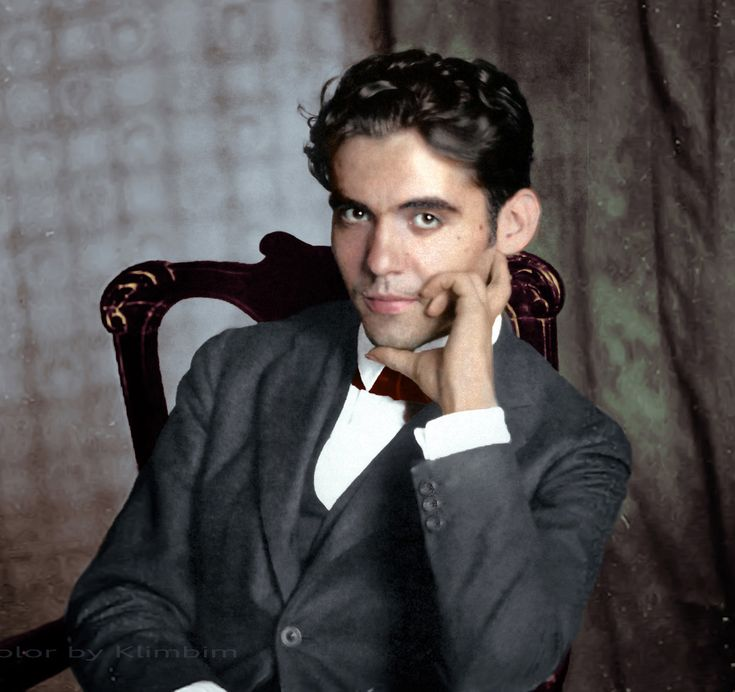

 |
El 5 de junio de 1898 nació en Fuente Vaqueros, Granada, Federico García Lorca. Considerado uno de los poetas españoles más brillantes del siglo XX, la obra de Lorca obtuvo un gran reconocimiento ya en su época, pero finalmente el estallido de la Guerra Civil española en 1936 acabaría con la vida del poeta, que murió fusilado en Granada. En la parte occidental de la comarca de la Vega de Granada, la población granadina de Fuente Vaqueros vio nacer el 5 de junio de 1898 a uno de los poetas más brillantes de la historia de España: Federico García Lorca. El autor español más celebrado del siglo XX, símbolo de todos los desaparecidos en la Guerra Civil española y cuyos restos, más de 80 años después de su muerte, aún permanecen en una fosa común. |
La Residencia de Estudiantes de Madrid, a la cual se trasladó en 1919, era en aquel entonces un hervidero intelectual. Por ella pasaron figuras de la talla de Albert Einstein, John Maynard Keynes o madame Curie, personajes que influyeron enormemente en la formación intelectual de Lorca. Según palabras de su amigo Adolfo Salazar, conocer a Luis Buñuel, Rafael Alberti o Salvador Dalí supuso para Federico huir del tedio intelectual que tanto odiaba.
|
Tras una estancia en Buenos Aires, Lorca regresó a España en 1934, donde la situación política era insostenible y se respiraba un clima prebélico que hacía presagiar el estallido de una guerra civil. Mientas el mundo entero admiraba a Lorca como "el Homero español", las críticas hacia él se recrudecieron en el contexto de tensión previo al conflicto, y aunque se resistió a la presión de sus amigos para afiliarse al Partido Comunista, sufrió las arremetidas de los conservadores por su amistad con personalidades abiertamente socialistas como la actriz Margarita Xirgu. La popularidad de García Lorca y sus numerosas declaraciones contra las injusticias sociales le convirtieron en un personaje incómodo para la derecha. |
|
A día de hoy la muerte del poeta aún suscita numerosas preguntas. Últimamente han surgido algunas teorías, como la planteada por el investigador Miguel Caballero Pérez, que postula que en la muerte de García Lorca estarían directamente implicadas las familias Roldán y Alba, enfrentadas con el padre del poeta por viejas rencillas relacionadas con el reparto de unas tierras compradas a medias. Siempre según este autor, aprovechando el golpe militar y la publicación, en la primavera de 1936, de La Casa de Bernarda Alba, un libro donde Lorca hace una crítica ácida y feroz de estas familias, fue cuando, al parecer, estas decidieron ajustar cuentas con el poeta. |